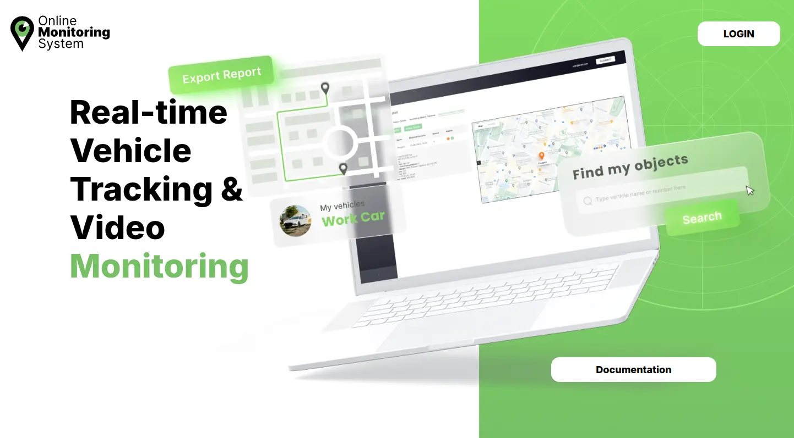
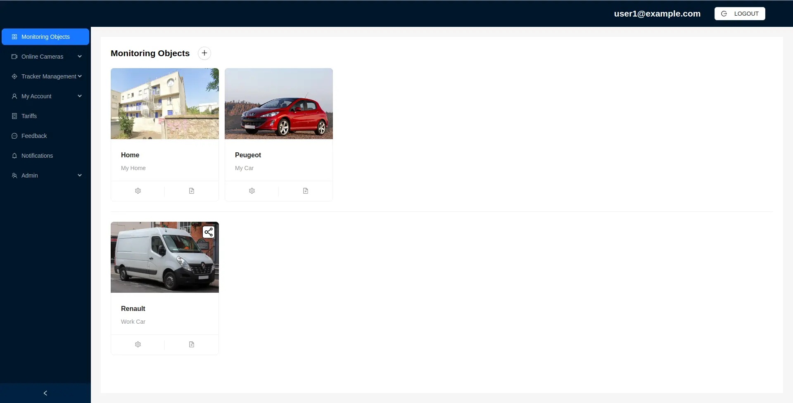
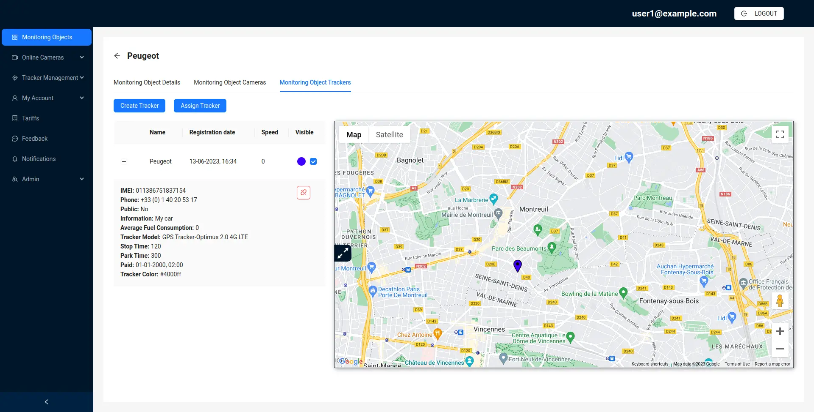
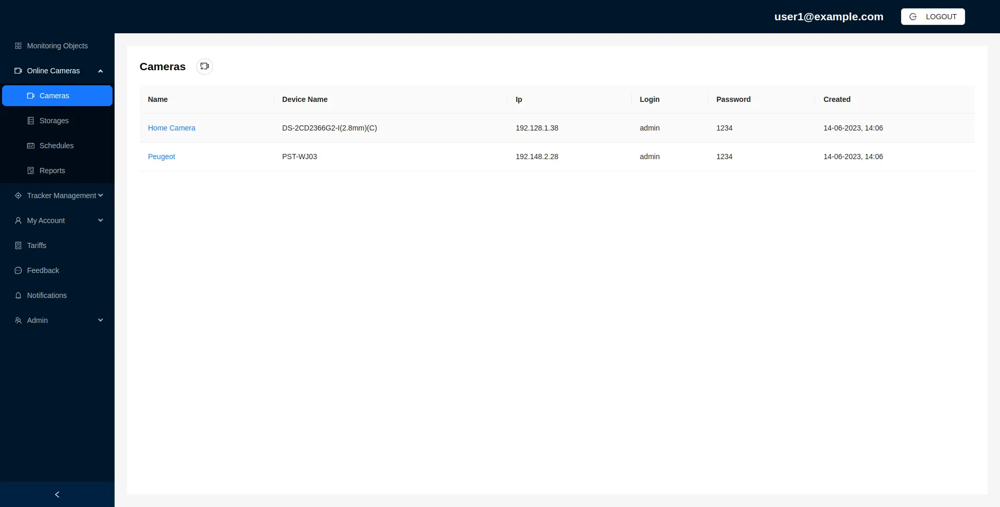
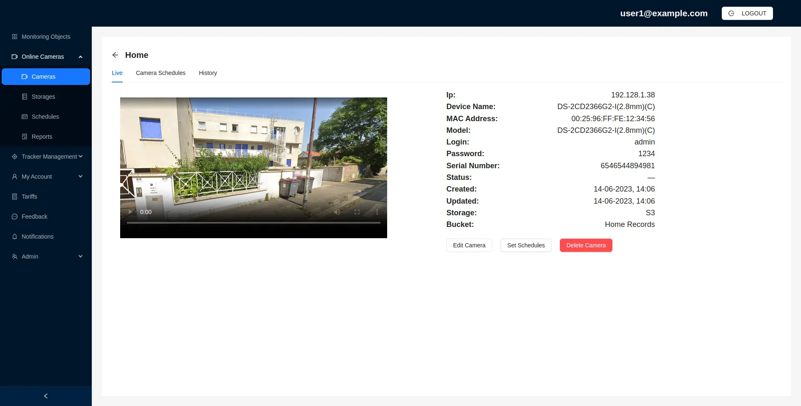
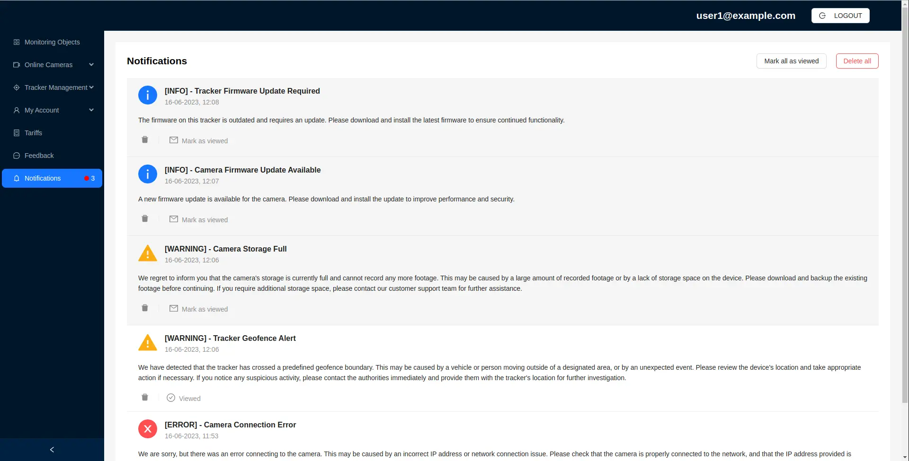
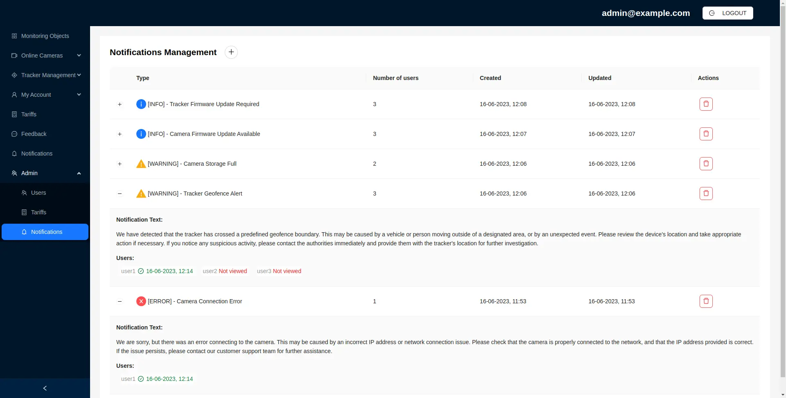

Zakodix Tech Group


-
Услуги

-
Решения
- О нас
- Связаться с нами
Запустите
свою
систему онлайн-мониторинга

Система онлайн-мониторинга
ZakodixOMS — современная и простая готовая платформа для построения системы онлайн-мониторинга.
- Использование многолетнего опыта ведущего разработчика в области аппаратного и программного обеспечения, а также собственных идей в телематике и видеопотоках.
- Качественное и надёжное оборудование, соответствующее всем нормам для данной группы устройств.
- Современные технологии и подходы.
Возможности платформы мониторинга
Отслеживание объектов

/Online monitoring of the location of all vehicles in your fleet.svg)
Онлайн-мониторинг местоположения всего автопарка

/map location.svg)
Отображение маршрутов на карте

/controle on speed limits.svg)
Контроль скоростного режима

/fuel control.svg)
Контроль расхода топлива

/movements.svg)
Отчёты по перемещениям и остановкам

/vehicle parameters.svg)
Контроль остальных параметров ТС
Видеомониторинг


Поддерживаемые возможности
- Мониторинг трекеров в реальном времени
- История перемещений всех объектов
- Треки на картах (любой объект, любое время)
- Отчёты с данными трекинга
- Прямая трансляция с камер
- Гибкое расписание записи видео
- Хранение видео в облаке по S3
- Управление доступом
- Биллинг и платежи
- Развёртывание в контейнерах
- Управление уведомлениями
- Управление нагрузкой






